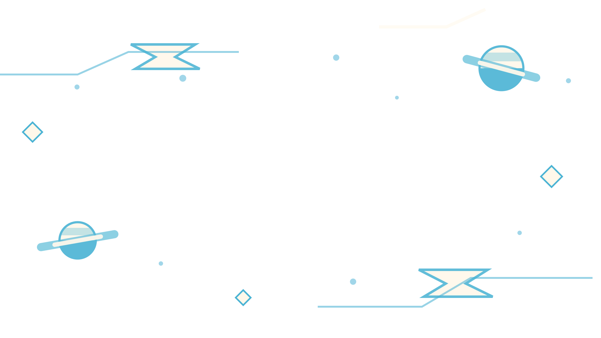
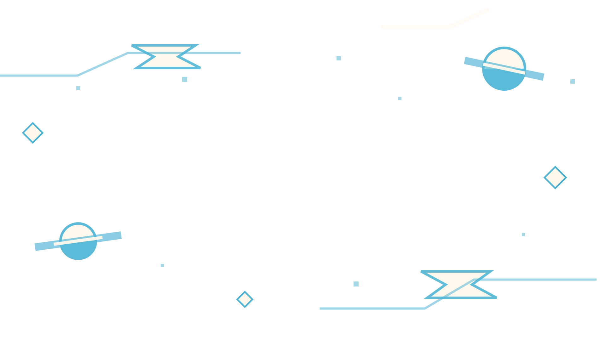
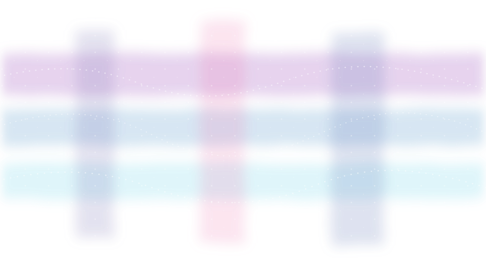
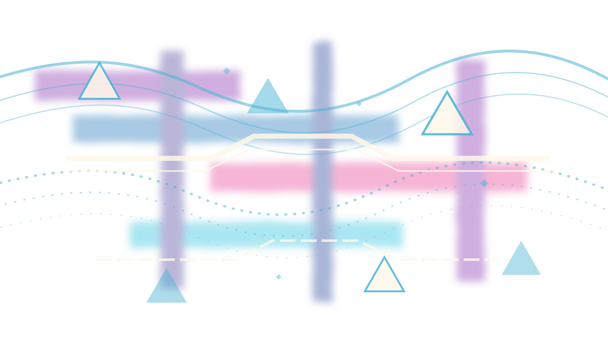
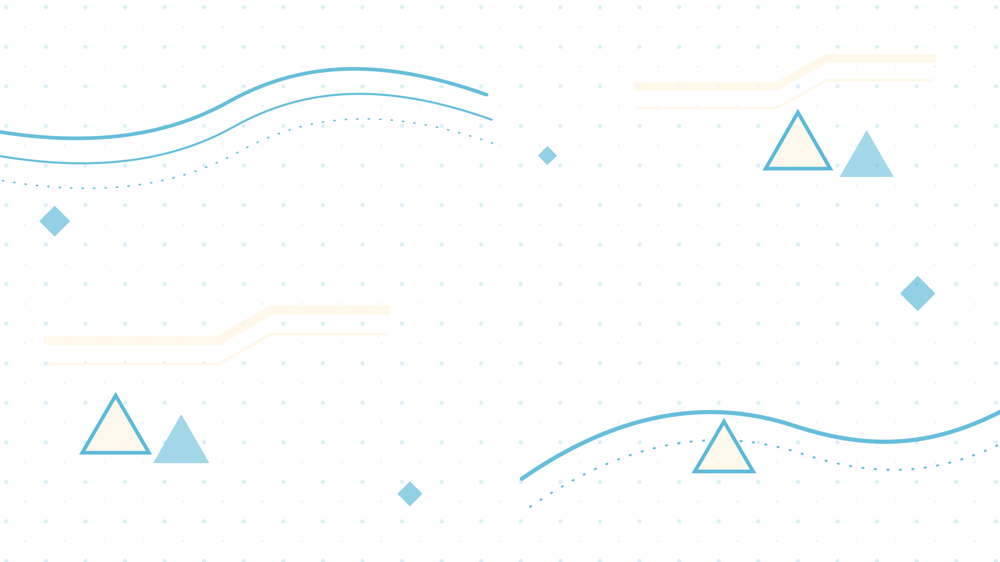
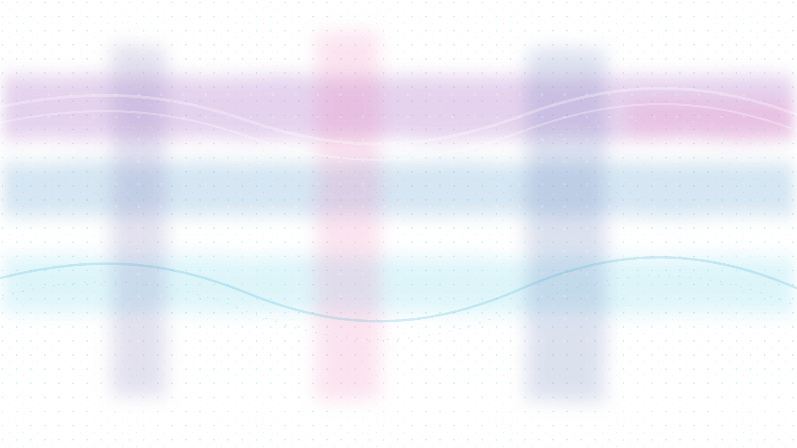
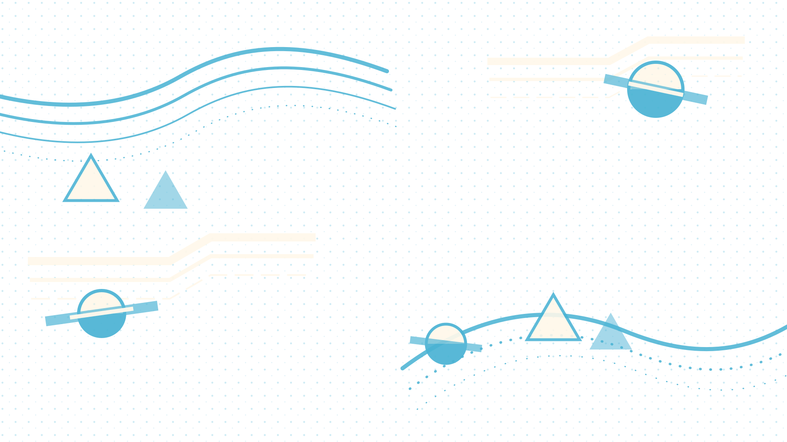

Galaxy Artwork Draft Comparison
Draft 1 keeps more illustrated space-object language. Draft 2 pushes toward modern-art simplicity. Draft 3 turns the system into a tiny space alphabet. Draft 4 dissolves the objects into plaid, curves, dots, and triangles. Draft 5 keeps the planet glyphs and floods the field with halftone, repetition, and graduated lines.


Draft 1


Draft 2


Draft 3



Draft 4

